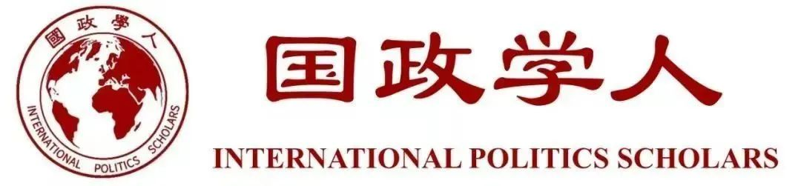

收录于合集 #留学纪实 4个

美国作为当下的超级大国，一直以来是中国留学生选择的热门国家，笔者的专业是法律，曾经选择美国为自己的留学目的国，选择的学校是坐落于美国东海岸的波士顿大学，申请的项目是美国一年期的法学硕士项目（LLM），下文将从学习、未来的职业规划等角度谈一谈笔者的具体体会与感受。

文章简介
【本期作者】 黛云；本科就读于华东地区一所政法院校的法律专业；研究生申请到美国波士顿大学一年期的法学硕士项目（LLM）
【排版】 苏语涵
【美编】 聂涵琳
从地理位置谈择校、看美国
在申请留学期间，学校的地理位置会是众多学生考虑是否申请的因素之一。美国的东部大城市较多，有纽约、华盛顿、波士顿等城市，在大城市上学的好处是较容易找工作，社交活动也会比较丰富，但是生活成本很高。同样生活成本很高的还有西部（主要是加州），但是加州天气好，阳光充足，冬夏气温均比价舒适，而且可以尝试在硅谷等地寻找工作。生活成本较低的是中部，乡村田野较为宁静，可以专心读书，但是找工作的机会方面不如东西海岸。
笔者选择东部上学的主要原因是看重东部是美国文化的一个集合地，波士顿倾茶事件、莱克星顿枪声、葛底斯堡演说等重大历史性事件均发生在美国的东部。因此， 笔者希望在美国国家历史的发源地上学，切身体会美国的历史与文化。通过了解一国的历史与文化进而更多地与该国及其人民进行交流。
在笔者的留学期间，笔者发现美国老百姓对自己国家历史的掌握程度其实并没有很高，一些中国学生在初高中历史课堂上学习的西方文化知识与美国历史知识或许比一个美国普通青年还要多。笔者曾与法学院的一位美国JD同学聊天时聊到“达摩克利斯之剑”这一西方典故时，Ta表示浑然不知，这让笔者很是诧异。从美国人对其自身文化了解不深入的情况看，其对大洋彼岸另一个大国的了解也不会特别深入，且事实确实如此。很多美国人并不知道现如今中国的发展情况，对中国的印象依旧停留在上个世纪的水平，对于中国的城市，大多也只知道北京和上海两座城市。笔者接触过学校几位年长的教师中，有三位是去过中国的，剩下几位则没有去过中国。三位去过中国的老师中，有两位是在21世纪之后去的中国，对中国现代化的印象颇为深刻，对中国的发展也颇有好感。剩下一位是在1996年时前往中国桂林旅游，对中国持有比较落后与乡村化的印象，而且现如今依旧不了解中国的改革开放给中国带来的巨大改变。其他几位老师没有去过中国，对中国的印象主要是停留在西方媒体的新闻报道层面，虽然对中国学生很是友好，但是他们内心对中国的态度并没有想象中的那么积极。
笔者通过在美国的学习经历感受到，现阶段我国的经济、政治、军事等实力确实显著提高，越来越多的国人走出国门，世界上也有越来越多的人听说了解中国，但了解程度是否深入积极确实是我们下一步的努力方向。因此， 与国力相对应的文化软实力会成为这一阶段国家对外发展必不可少的重点之一。 通过文化外交的策略，让世界各地更多的人了解中国，认识中国，促进更多合作。
从生活中看中国元素在美国
在美国的生活中，其实不乏中国的元素，这可能是因为笔者所处的波士顿大学国际学生众多，周围亚裔较多形成的。波士顿大学周围有中国超市、中国餐厅还有其他亚洲餐厅，所以在生活上笔者可以很快适应美国的生活，而且美国的许多大城市中都有唐人街，因此这对中国的留学生来说是一件非常方便的事。不过，在美国生活过一段时间后，笔者也发现了唐人街的一些不足之处，比如唐人街的道路普遍不是很干净，一些中国饭店的装修也较为陈旧，菜色质量也不如国内好等问题。这其实对中国软实力的形象发展上是不利的。因为一个不了解中国的外国人想了解中国，可能第一步就会去唐人街，如果唐人街的样貌并没有给人耳目一新，眼前一亮的感觉就会很容易打消外国人继续了解中国的念头，甚至会推及其对中国的印象，认为中国依旧老旧落后。反观东亚的其他两个国家，精致的寿司日料、日本拉面、韩国烤肉和甜品都颇受老外的青睐，隐约之中也会加深老外对日韩的良好印象。诚然，在国外生意经营大多都是一种个人行为，但是当个人走出国门后，其言谈举止、格调品位在旁人看来总会与其母国相联系。因此，每一位海外华人身上，其实都肩负着一种使命，即多维护祖国母亲形象，多为祖国母亲争光。 中国软实力的提升不单单是依靠政府大量人力财力的投入，更是要通过每一位中国人在国际交流中不断奋斗的点滴积累起来的。
对中美法学院不同的感悟
笔者的本科专业也是法律，在华东地区的一所政法院校进行学习，本科阶段的学习和大多数学生差不多，即认真上必修课、选修课，学校里有法律类赛事的机会便会参加观摩一下，有时也会参加学校的法律援助服务。在本科之后，一方面是为了自己有个更好的进修学习的地方，另一方面也是对美国充满好奇，因此申请了美国的LLM项目，来到了波士顿大学。波士顿大学法学院排名常年徘徊在T20-23之间，申请难度不算巨大，吸引着中国五院四系的许多学生。学校的法律课程涵盖范围相当丰富，作为LLM学生，JD(1-3年级)的课程都可以选择。合同法，公司法，破产法等是LLM学生的热门课程。笔者的兴趣点大多在美国的公法领域，选择的课程主要是宪法、国际法以及与之相应的法律检索课程。美国法学院的又一重大特色就是每位法学院的学生都须选择法律文书写作课程，学校还专门为LLM学生配备了助教。此外，学校还专门为LLM学生开设了美国法律总览介绍的课程，为国际学生了解美国法律提供了良好的渠道。
笔者对美国法学院的写作课和检索课确印象深刻，从这两节课中可以感受到美国法学实践的 细腻风格 ，而这两类课的内容在中国法学院的教学中没有被高度重视。写作课上，美国法学院的老师更加注重学生对同一事实或法律的观点陈述。对于案例的分析和使用，老师会更加注重学生对某一具体行为构成要件的分析，对案例的对比、类比适用。学生在法律适用的过程中，应当写清之前的判例事实与现在分析的案例事实相同之处在哪儿，不同之处又在哪儿，先前判例的法律分析可否适用现在的案例。老师更加注重学生的法律逻辑分析以及论证的完整。法律检索课上，检索引擎的繁多以及检索方法的多样也再一次令我感到惊叹。Westlaw, LexisNexis, Heinonline这几个法律检索库虽也为中国师生朋友们所知晓，但是具体操作上确实是美国老师讲解的更为详尽。令我印象最为深刻的还有Bloomberg检索系统，该系统对美国各大法院的立案、庭审进度和裁决结果都做了实时更新，为法律工作者提供了大量的便利。由于美国法学院的授课内容和方式都偏向实务，因此美国法学院的毕业生毕业后也更容易在律师实务中上手，这也是LLM项目颇受中国学生青睐的原因之一。另外，LLM项目在中国已热门多年，中国法学院在课程教学上也大量借鉴国外法学院的优秀经验，更多注重学生实践的培养，开拓更多模拟法庭赛事。因此，从这一点看，这也正体现出中国在改革开放后，不断扩大对外交流，不断加深对美交流，让中国的法学发展受益良多。从这段中国的发展经验来看，两国的充分交流对两国都是有利的，中国在与美国的交流中学习了先进的法律分析技术，美国也通过与中国的交流将更多的外资律所开进中国，也有更多的美国学生愿意前往中国学习进修。因此， 中美扩大深化交流是发展趋势， 特朗普政府的一些对华留学限制措施只是川流在奔涌向前时激起的小浪花，阻挡不了历史大势。
在法学院的学习过程中，笔者还感受到了美国人对其联邦制度的 制度自信 。美国人常以其联邦宪法中的“三权分立”而引以为傲，甚至觉得这是世界上最优的制度。这体现于一个非常有名的案例——马伯里诉麦迪逊案，这在中国的法学院里也常被老师提及。该案从此确立了美国的违宪审查制，最高法院确立了有权解释宪法、裁定政府行为和国会立法行为是否违宪的制度，对美国的政治制度产生了重大而深远的影响。笔者留学所在学校波士顿大学便坐落于波士顿的Commonwealth Avenue上，中文翻译为“联邦大道”，或许这是巧合，也或许这是美国人制度自信的又一体现吧!
从美国人的制度自信上可以看出，一国想要拥有长久的制度自信并非靠借鉴和学习外国制度获得，更多地还是要在本国的政治文化生活中去寻找。中国在改革开放的前40年中大量学习参考外国经验，让中国的社会生活有了质的改变。改革开放发展时至今日，中国在哲学社会科学的发展上更应按照立足中国、借鉴国外，挖掘历史、把握当代，关怀人类、面向未来的思路，着力构建中国特色哲学社会科学。在依法治国中全面坚持和完善中国特色社会主义法治体系，坚持中国特色社会主义制度，贯彻中国特色社会主义法治理论，相信在不久的将来， 制度自信会扎根于每位老百姓的心中。
除了上述笔者提到的美国法学院课程的细腻风格以及透露出的制度自信之外，美国对国际法的理解适用也与中国有些许不同， 有一丝现实主义的色彩。 这一争议体现在中美两国对于中美三个联合公报的法律性质上存在不同的看法。根据《中华人民共和国条约集》，中国政府和学界均认为中美三个联合公报是国际法上有拘束力的条约而且符合《维也纳条约法公约》关于条约的定义及其基本构成要素。虽然中美三个联合公报没有在联合国秘书处登记，但并不影响其条约性质。美方则认为，美国的国际条约应当经由总统缔结并需要取得参议院出席议员2/3以上同意，而中美三个联合公报都没有经过美国参议院的同意，不符合美国缔结国际条约的法律程序，中美三个联合公报只是美国总统缔结的行政协定。然而，尽管美国不是《维也纳条约法公约》的缔约国，但是美国国内法关于条约的定性还是以《维也纳条约法公约》为依据的，这一点又恰恰证明美国国内法认可《维也纳条约法公约》对条约构成要素的认可。但美国却不想承认中美三个联合公报的条约效力，显然是具有政治目的，是为美国政客的现实政治利益服务的，而且美国还将国会批准的《与台湾关系法》凌驾于其之上，对中美之间的双边关系是不利的。笔者从这一争议中感受到，在自身的学习过程中，不应仅仅只懂国际法或国际关系，而是应当将两者结合运用并学习，才能在国际事务的实践中切中快速切中问题要害并寻找突破。回溯百年前的历史，清廷外臣李佳白就曾指出，“中西未交涉以前不识有公法也，中西既交涉之后不可无公法也。”他还预言：“我国家得此数十外交之长才，转弱为强……是公法之所系者大已。”作为百年未有之变局中的青年，我辈也应当肩负起为祖国实现社会主义现代化强国提供有力法律支撑的重任。
美国的教学服务
美国的教学环境和教学服务也是非常的 人性化 ，让学生感到舒适。波士顿大学法学院的大楼几年前经过翻新，教室显得宽敞明亮，而且柠檬黄的灯光更有利于学生投入学习。LLM学生在第一学期开学时，法学院的Dean都会单独找每一位学生谈一谈一年的学习规划。到了第二学期，学院也会再一次提供学生约谈学习规划的事宜。图书馆作为学生学习的必备场所之一也为学生提供细致服务，比如国际学生对书目检索感到有困难，老师也会亲自帮忙搜寻；电脑程序方面有任何问题也可以寻求图书馆的IT工作人员帮忙解答。除此之外，遇到感恩节等节假日活动，还会有老师邀请法学院的学生去其家里作客，活动氛围也是其乐融融。
美国学习中的课余活动
在美国学习时，学校不仅在学习上为学生提供大量资源，在课余活动方面也是非常丰富，比如出海看鲸，游船活动等。学生还可以通过学校的体育馆官网自行选择体育运动课程，比如网球、壁球、高尔夫等。体育馆的设施也是非常的完备与齐全，具有良好的体验度。
美国的社交生活也是非常丰富的， 而且波士顿是一座大城市，会有许多机会让你去发掘。
首先来谈一下波士顿大学提供的社交活动，法学院每周五都会给每位同学推送Friday Reminder邮件，邮件中会涵盖法学院下一周的所有活动，有讲座、职业培训、法院参观活动等。由于LLM项目针对的群体大多将来都有意向成为律师，法学院不仅会不定期提供职业礼仪培训还会为每位学生提供简历和cover letter修改服务，为学生在求职季中助力。因此，想要在美国找律所实习的同学可以好好利用学校提供的不限次数且免费修改CV和PS的机会，与老师多沟通，掌握一些美国工作找寻中的面试技巧。法学院每周四晚也会为学生提供Bar娱乐的服务，如果学生认为不耽误学习且经历充沛可以前往Bar进行放松。除法学院提供的社交活动之外，法学院的学生们自己也会组织许多聚会活动，令我印象较为深刻的是一位韩国朋友，他每周五晚上都会在家中举办Party并邀请各个学院甚至不同学校的学生前去参加。学生的国籍大多以韩国、中国、日本和新加坡居多。因此，他的周五Party可以算是为东亚学生提供了一个良好交流的平台。
其次，波士顿大学地处波士顿，虽然在波士顿地区不是一流顶尖名校， 但是依旧可以蹭到许多顶尖名校的活动， 其中就包括哈佛大学的中国法学论坛、哈佛金融论坛、麻省理工音乐会以及各类社会上的商业投资大会等。这些信息一方面可以通过一起在法学院读书的同学了解到，然后一起打Uber前往，也可以通过“Special Event”的APP（类似于豆瓣同城）了解到波士顿地区的各大活动。
波士顿可以算得上是美国的文化之都，音乐厅、歌剧院在波士顿是非常多的。而且波士顿交响乐大厅与波士顿大学也有合作，学生可以凭券用学生价购买音乐会的门票，具有很高的性价比。另外，波士顿离纽约也不算特别远，搭乘Mega Bus约5个小时就能从波士顿前往纽约，纽约的百老汇音乐剧确实名不虚传，如果有机会前往美国一定要听一场。
LLM毕业后的职业发展
LLM是一个职业导向性非常强的专业，大多数选择去英美国家读LLM的学生在毕业后会选择进律所工作。许多LLM在毕业后会选择在纽约的各大律所尤其是向华人开得律所投简历。如果实力足够强大或运气够好进了国际律所，一般会从legal consultant做起，理论上做了3-4年后，会晋升至Associate，在经过几年的锤炼，也许会有机会做合伙人，或转到公司做法务总监。也有一部分LLM会将自己的留学作为一次镀金的经历，回国后进入内所工作，T14的LLM比较容易进入红圈所工作，T20的LLM也有机会。不过，不管毕业后进入的律所是大是小，在进入职业后，一切也都要从基础性法律工作做起，多做项目，熟悉业务，掌握最高院指导案例，为日后更上一层楼做好铺垫。
笔者的未来规划与大多数LLM均不相同，这是由于笔者在美国选修了大量的公法课，发现了一些现象从而改变了最初从事律师的想法。笔者在美国的宪法、国际公法等课堂中发现美国确实是一个自信的国家，但是这种自信中又带着一股傲慢，所以在一些课堂上总会出现一些对中国内政指手画脚的声音。笔者认为，可能单纯地学好法律不能让中国稳稳当当地立足于世界之林，必须得懂一些国际政治的运转和博弈之道才能让中国在复杂多变的国际环境中找到更加有利于自己的发展路径。所以笔者回国后又打算学习国际关系，希望自己在未来能对与中国有关的国际事务尽一份力量。
中国更加重视涉外法律人才
当今世界正在经历百年未有之大变局，2017年10月18日，习近平总书记在党的十九大报告中提出，成立中央全面依法治国领导小组，加强对法治中国建设的统一领导。笔者从美国留学的经历上也感受到，中国的法律运用分析和法学发展与美国还存在着一定的差距，还需不断努力。在涉外法律人才的建设方面，中国已经在这方面高度重视且奋起直追，相关的内容推荐读者阅读由联合国国际法委员会委员、曾任外交部条法司司长、中国驻马来西亚大使黄惠康教授所写的《从战略高度推进高素质涉外法律人才队伍建设》一文，该文为中国加强高素质涉外法律人才队伍建设提出了多点建议，令笔者感觉中国未来的涉外法律人才队伍充满希望。如果有志于成为中国涉外法律人才的读者也可以多多关注相关动向，练好法律基本功，为祖国未来涉外法治事业添砖加瓦。
总体来说，在美国留学期间不管是生活还是学习都是非常丰富精彩的，以上就是笔者从美国的留学生活、课堂学习和感悟、课余活动和职业规划等方面来谈一谈留学时的客观体会，以飨读者。
添加 “国小政”微信
获取最新资讯


国政学人
支持学术公益与知识传播
微信扫一扫赞赏作者 __赞赏
已喜欢，对作者说句悄悄话
取消 __
发送给作者
发送
最多40字，当前共字
上一页 1/3 下一页
长按二维码向我转账
支持学术公益与知识传播
受苹果公司新规定影响，微信 iOS 版的赞赏功能被关闭，可通过二维码转账支持公众号。